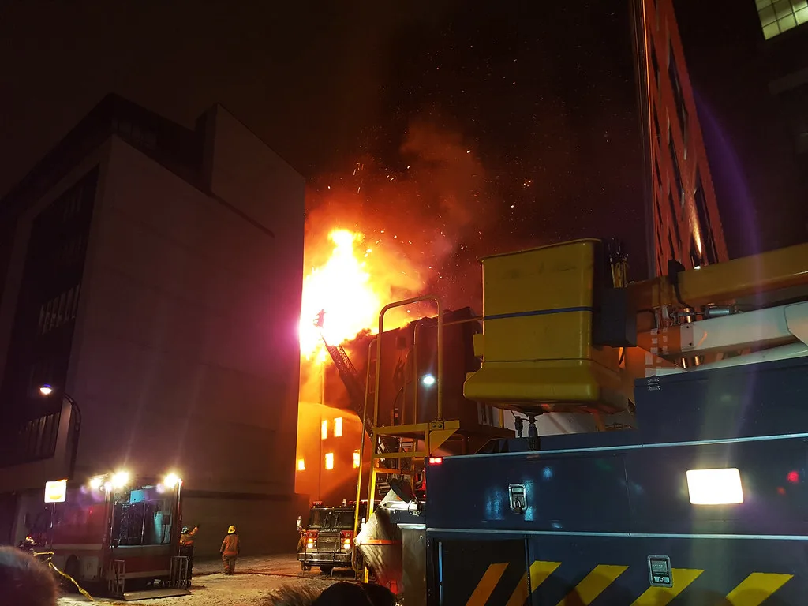
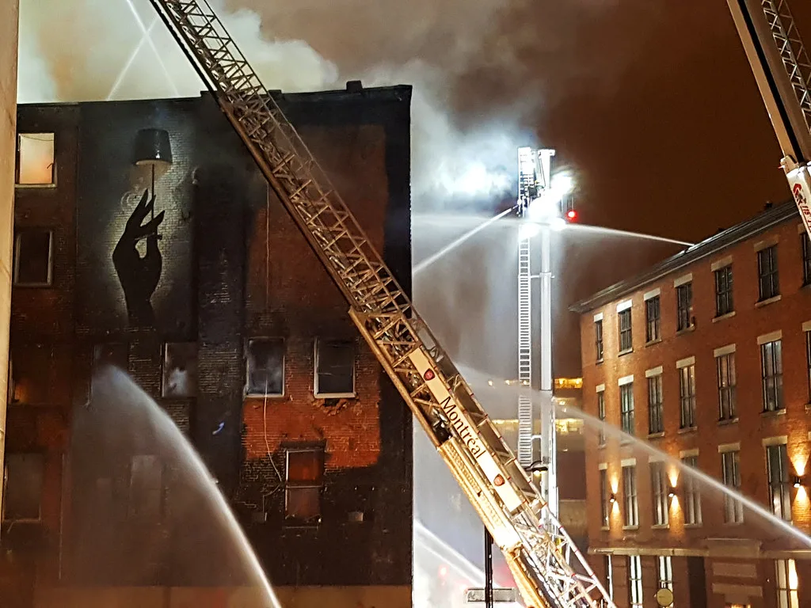

양주 빌라서 방화 추정 폭발 화재…60대 남성 숨지고 6명 부상
경기 양주시의 한 빌라에서 방화로 추정되는 폭발과 화재가 발생해 60대 남성이 숨지고 경찰관과 소방관 등 6명이 다쳤다. 추석 연휴 기간 발생한 사고로, 경찰과 소방 당국은 방화 여부에 무게를 두고 정확한 화재 원인을 조사하고 있다. 인명피해와 함께 건물 일부가 파손되면서 주민들이 한때 대피하는 소동도 빚어졌다. 연휴 기간 벌어진 사고여서 지역사회에 놀라움을 안겼다.
사고는 지난 25일 오전 1시20분께 양주시 덕계동의 한 빌라 3층에서 발생했다. "술에 취한 주민이 휘발유를 뿌리는 것 같다"는 주민 신고가 접수돼 경찰이 현장에 출동했다. 경찰이 신고가 접수된 세대를 확인하려던 순간 갑자기 폭발음과 함께 불길이 치솟았다. 당시 현장에 있던 경찰관들은 미처 대피할 틈도 없이 폭발에 휘말린 것으로 전해졌으며, 인근 주민들도 놀라 잠에서 깼다고 진술했다.

불길은 순식간에 건물 전체로 번졌고, 출동한 119 소방대원들이 약 50분 만에 큰불을 잡았다. 진화 이후 소방당국이 내부를 확인한 결과, 집 안에서는 60대 남성 A씨가 불에 타 숨진 채 발견됐다. 신고 내용대로 해당 세대에서 폭발과 화재가 시작된 것으로 추정되고 있으며, 정확한 사망 경위는 부검을 통해 확인될 예정이다. 소방당국은 초기 진화 과정에서 인접 세대로의 확산을 막는 데 주력했다고 밝혔다.
이번 폭발과 화재로 경찰관 4명과 소방관 1명, 인근 주민 1명 등 모두 6명이 다쳤다. 다행히 부상 정도는 경상에 그친 것으로 전해졌다. 화재 진압 과정에서는 경찰관 2명이 옥상에 고립되는 아찔한 상황도 벌어졌으나, 동료 대원들이 곧바로 구조에 나서 큰 피해로 이어지지는 않았다. 부상자들은 인근 병원으로 옮겨져 치료를 받았으며, 일부는 당일 퇴원한 것으로 알려졌다.

경찰과 소방당국은 신고 내용과 현장 정황 등을 종합해 방화에 무게를 두고 수사를 벌이고 있다. 폭발이 어떤 경위로 발생했는지, 휘발유 등 인화물질이 실제로 사용됐는지 등을 확인하기 위해 국립과학수사연구원에 정밀 감식을 의뢰할 방침인 것으로 알려졌다. 경찰은 현장에서 확보한 잔해물과 폐쇄회로(CC)TV 영상도 함께 분석하며 정확한 발화 지점을 특정하고 있다.
사고가 난 빌라는 3층 건물로, 폭발 충격으로 인해 내부 구조물 일부가 손상된 것으로 파악됐다. 경찰은 숨진 A씨가 평소 이웃과 갈등을 겪었는지 등 사고 경위 전반을 조사하는 한편, 생존자와 목격자들을 상대로 당시 상황을 구체적으로 파악하고 있다. 인근 주민들은 갑작스러운 폭발음에 놀라 한때 대피하기도 한 것으로 전해졌으며, 일부는 안전을 우려해 임시 거처로 옮겼다.
당국은 추석 연휴 기간 다가구 주택과 빌라 밀집지역에서 화재 위험이 커지는 만큼, 유사 사고 재발을 막기 위한 안전 점검을 강화하겠다는 방침이다. 특히 인화물질 취급과 관련한 주민 신고가 접수될 경우 신속한 초동 대응 체계를 마련하겠다고 밝혔으며, 노후 주택 밀집 지역에 대한 소방 점검도 확대하기로 했다. 아울러 정신건강 위기 상황에 놓인 주민에 대한 지원 체계도 함께 살펴보겠다고 덧붙였다. 경찰은 수사 결과를 토대로 관련자 처벌 여부도 검토할 계획이다.